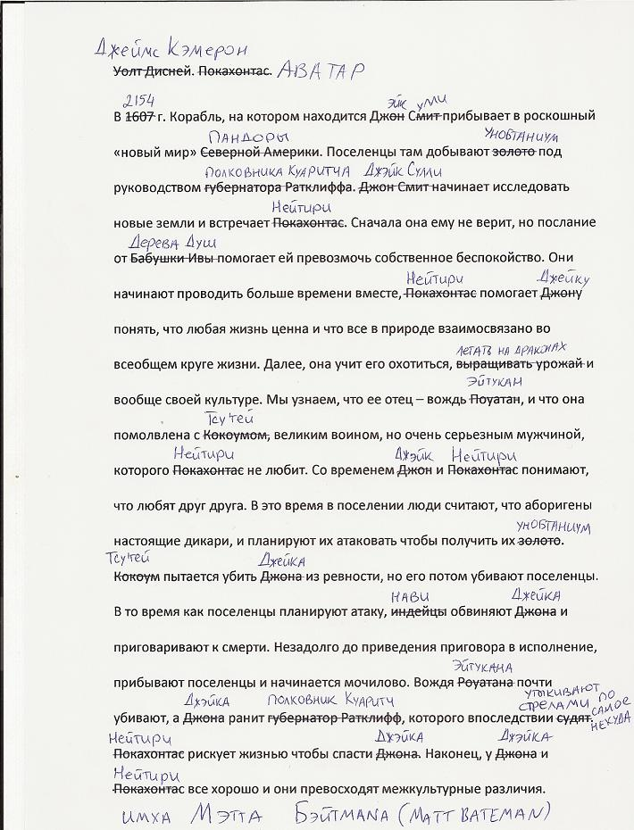
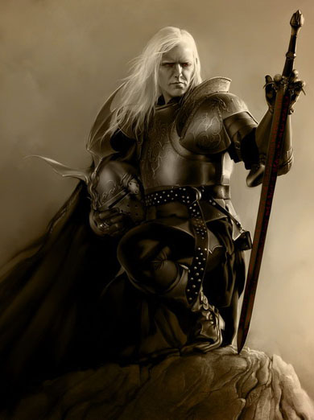
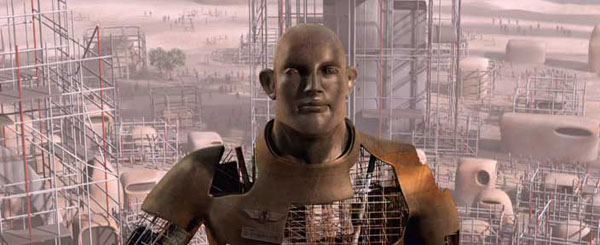
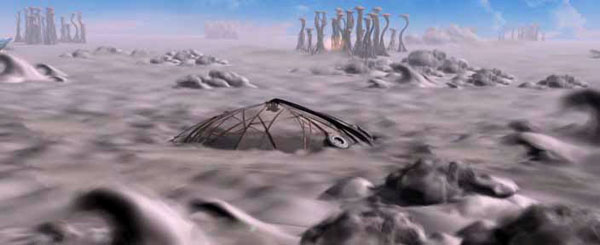

А что в других фильмах и книгах?
Kincajou написал очень правильный текст на тему суггестии в фильме «Враг мой» (1985), снятом по книге Барри Лонгиера. Цитирую полностью.
***
Буду краток ©
В Галактике неспокойно. Объединенные силы Земли зря надеялись на мирное развитие человеческой цивилизации — империя Драко делиться ценными ресурсами с людьми совершенно не намерена. Это война, и победить в ней может только сильнейший.
Однажды случилось так, что два солдата из противоборствующих сторон, ведомые чувством долга и священной яростью воина, столкнулись в бою. Силы оказались примерно равными, но судьба-злодейка устроила так, что оба воина рухнули на поверхность планеты, над которой шло сражение.
Воин-землянин потерял корабль и все свои запасы.
Воин-драко, напротив, почти ничего не потерял.
Но оба оказались заперты на планете, ибо деться с нее некуда — оба корабля разбиты.
В отчаянной и благородной попытке землянин попытался выполнить свою миссию, восстановить справедливость и уничтожить врага, но гнусный инопланетянин коварно воспользовался наивностью человека и перехватил инициативу, заставив землянина стать фактически своим рабом.
И удивительное дело! чем дальше землянин сосуществовал вместе со своим противником, тем все больше проникался противоестественной симпатией к этому отвратительному существу. Более того, он однажды называет драко своим другом!
Сделаю небольшое отступление. Естественно, все события фильма абсолютно вымышлены. И такой путь событий выбран сценаристом отнюдь не случайно. Голливудское (читай коммерческое) кино, кроме очевидной цели нажиться на страстях зрителей, преследует еще одну цель, не имеющей прямого отношения к сиюминутной выгоде. Но косвенное отношение все же есть — голливудщина пестует тайные страхи и желания людей, формируя свою аудиторию, легкими и незаметными воздействиями на подсознание вылепливая тот тип потребителя, которым легче всего управлять и который безропотно принесет последний грош в кассу голливудской продюсерской мафии.
Но есть и третья цель, на которую я сейчас хочу обратить особое внимание.
Фильм, о котором идет речь — «Враг мой» — совсем не случайно был снят в то время, когда Советский Союз начал чувствовать некоторое недомогание на фоне кажущегося потепления отношений с США. И именно эта лента, вместе со множеством прочих внешне низкокачественных (но в то же время крикливо-ярких) поделок голливудских ремесленников, «совершенно случайно» оказалась в первой волне западных фильмов, легально разрешенных к показу на территории СССР.
Советский зритель, якобы истосковавшийся по сочным и затейливым спецэффектам (на самом деле эту тоску насаждали агенты влияния, но это тема совсем других статей других авторов), бросился в кинотеатры. Простые люди — рабочие и инженеры, доярки, учителя и врачи — упивались пышным экранным действом и невиданными доселе эффектами (хотя это и не так, советские режиссеры снимали ничуть не хуже. Например, фильм Павла Клушанцева «Планета бурь» нещадно цитировался и перевирался западными продюсерами!) и не замечали, как тлетворное влияние западных ценностей проникало в их души обходным путем. То, чего стратеги ЦРУ не могли добиться прямо, получилось у них косвенно: СССР пал, и не последняя вина в этом лежит на описываемом фильме. Но я отвлекся, вернемся же к рассмотрению сюжета.
Итак, землянин и драко сосуществуют на одной планете, под одной крышей, взаимно изучая друг друга — культуру, язык и прочее. По мере «притирания» вражда уходит, сменяясь чем-то иным. Человек перестает ненавидеть своего заклятого врага — А ЗРЯ! Война ведь ни на минуту не затихает! Причем герои фильма об этом прекрасно знают. Но сценарист вписал в их поведение именно такие моменты — вспомните, о чем я писал выше и поймете, зачем.
Если еще не понимаете, то я продолжу. Окончательный переворот в сознании воина-землянина происходит, когда он ощущает некий катарсис, причиной коего служит пение инопланетянина. Причем не просто пение, а псалмы инопланетной же религии. Испытывая внутреннее противоречие, землянин пытается убить пришельца, но терпит поражение. Он понимает, что проиграл.
Сделаю еще одно отступление. Инопланетяне-драко внешне относительно гуманоидны, хотя и отличаются во многом от людей. Вряд ли бы землянин почувствовал что-то сложное, если бы услышал пение абсолютно чуждого существа, какого-нибудь разумного слизня или жука. А вот человекоподобное существо (при должной актерской игре особенно) вполне способно вызвать сопереживание, на что весь фильм и нацелен. А другую вольность оставим на совести сценариста: воздухом планеты может без проблем дышать и человек, и драко, хотя показанные пейзажи растительностью, мягко говоря, не изобилуют.
Вернемся к сюжету. Землянин, чувствуя приближение безумия, решает отправиться в путешествие по планете — он хочет найти других людей, потому что надеется их найти. И находит. Сначала он наталкивается на следы торговцев рудой (и череп убитого драко). Последующий «внутренний монолог» показывает нам, что землянин уже почти не считает торговцев рудой за людей. Герой говорит, что они занимаются «незаконным поиском и добычей полезных руд» (наверняка ОЧЕНЬ ценных, раз за ними пришлось тащиться в иную планетную систему). Но как же так? Когда вольные искатели перестали быть людьми? Неужели тогда, когда они порабощали «драконов»? Но ведь сам землянин совсем недавно убивал ненавистных драко без всяких сожалений. Но тут оказывается, что это не драко ненавистные, а люди-рудоторговцы!..
Пропущу малозначимые события (и несколько лет по сюжету) и перейду к еще одному эпизоду, весьма выпукло демонстрирующему бесповоротность падения землянина.
На сей раз главгерой сталкивается уже не со следами, а с самими рудоторговцами. И без малейших колебаний убивает одного из них (выстрелом в спину! из лука!), защищая детеныша драко (тот пилот, с которым проходит первая половина фильма, рожает драконенка и умирает)! То есть человек уже не ассоциирует себя с людьми, он полностью на стороне инопланетных рептилоидов!
Что это? Как же так?! Почему?..
Мало того, зритель без всяких неоднозначностей сочувствует главгерою и радостно одобряет его действия, когда он стреляет по людям. И ужасается, когда другой рудоторговец тяжело ранит (что забавно, из древнего, совершенно не вписывающегося в канву повествования, пулевого пистолета) главгероя. То есть происходит полный переворот ролей: прежние враги — абсолютные чужаки! — уже друзья, а соплеменники (напомню, по сюжету фильма на Земле полный мир и единогласие, то есть среди людей у людей врагов нет) стали врагами. И это воспринимается как должное.
Кроме того, земная цивилизация показана эдакой «омашиненной», бездушной, механистической уродиной. Даже похороны проходят машинально-формально: труп выбрасывается в космос, а поминальный венок берется из обоймы типовых венков (оператор «похоронного конвейера» небрежно нажимает на педаль ногой!). Этот штрих тоже призван формировать определенный осуждающий настрой у зрителя.
Забавные совпадения с одним из недавно нашумевших фильмов: мягко говоря, очевидное недоверие военных к главгерою и угон (!) летательного аппарата. Главгерой возвращается на планету Файрин 4 и весьма жестоко расправляется с рудоторговцами (показаны нарочито грубыми, даже отвратительными типчиками — а драко-рабы, напротив, мудры и спокойны). «Нелегальная добыча» остановлена, порабощенные драко освобождены.
Дальнейшее развитие сюжета уже не столь интересно, потому что выходит на финишную прямую и становится окончательно предсказуемым — в конце концов, инопланетяне принимают землянина как своего родного. Облапошенные зрители рукоплещут, голливудские продюсеры довольно подсчитывают барыши, а их кураторы из ЦРУ поздравляют друг друга с очередной идеологической победой.
***
Конечно, рецензия от Kincajou писалась именно в контексте спора на тему «есть ли предательство в “Аватаре”», сами видите — все подгоняется под это внешне. Мол, и чужаки есть, и типа свои, которые люди, становятся врагами, а чужие инопланетяне — родными, и даже добыча руды тоже есть.
В чем же принципиальная разница?
В том, что главгерой У.Дэвидж человечество не предавал. Да, он убил человека ради инопланетянина — но преступника, а не тех, кто выполняет свой долг. При этом убил лично именно того, кто явно был смертельно опасен и ему — думаете, контрабандисты похлопали бы Джейка по плечу и отвезли бы на Землю?
Примечание: в книге что-то не припомню подобного эпизода, как и возвращения на планету для холокостирования работорговцев. Книга небольшая, и там все просто: родился Заммис (при родах умер первый драконианин Шиген), затем описание, как рос и воспитывался, потом главгерой сломал ногу и тут как раз появились картографы, которые обоих и спасли. Так что сцены явно были добавлены в фильм для пущего впечатления «за хороших чужаков против плохих своих».
При этом не было никакого братания с инопланетянам в целом (цитата по книге):
«— Дядя, я не хочу с тобой расставаться.
— Не говори глупости. Ты попадешь к своим. Тебя будет окружать родня — отец твоего родителя Гоциг, братья Шигена, их дети... ты меня напрочь позабудешь.
— И ты меня?
Я заглянул в желтые глаза и погладил Заммиса по щеке.
— Нет. Я тебя не забуду. Но только учти, Заммис: ты драконианин, а я человек, следовательно, мы с тобой в разных лагерях Вселенной».
Все четко: есть личная привязанность, а есть понимание действительности. Апологии предательства нет и в помине, есть трагедия. Одно дело — лично знакомый чужак, другое — все его племя. Робинзон, приручив Пятницу, не очень-то горел желанием познакомиться с его родственниками, не так ли?
Потом в книге Лонгиер четко описывает отношение к «дракоманам» со стороны землян и то же самое среди дракониан: «Что же вы, хотите опозорить свой род? Почему я вижу вас в обществе иркмаана?».
Так что нет во «Враг мой» предательства. Есть трагедия: земляне и дракониане могли бы как минимум не враждовать, но по каким-то причинам воевали, а затем сохранили ненависть. И если уж проводить аналогии, то не с «Аватаром», а, например, с Германией и Россией, которые только в XX веке два раза воевали между собой за интересы Англии. А вот если бы были союзниками…
Но самое интересное тут то, что Kincajou сам четко пишет о суггестии фильма: «дружите с чужаками, даже если была [холодная] война», о том, что это было выгодно именно Западу в момент, когда кинокартину выпустили в прокат и т.д.
А вот суггестию в «Аватаре» не видит в упор: и картинка маскировочная красивее, и оправданий полно, и либерастические мемы типа «нет Родины» и проч. уже не первый год интенсивно внедряются.
*****
Разумеется, тема перехода «на другую сторону баррикад» — не открытие Камерона. Давайте сделаем небольшой обзор. Полный список я не составлю, но в меру своей начитанности и «насмотренности» попытаюсь привести несколько примеров.
Сразу напрашивается ассоциация с «Танцующим с волками»: «Действие фильма происходит в 19-м веке, во время гражданской войны в США. Данбар оказывается в заброшенном форте в штате Дакота, где сначала заводит дружбу с волками, а затем и с индейцами, изучает их культуру и обычаи. Он влюбляется в девушку, правда, белую. Но вот приближается регулярная армия, и Данбару приходится делать решающий выбор».
Честно признаюсь — этот фильм я не смотрел, как-то не возникает желания, причем именно из-за сюжета. Вот наткнулся на краткое описание, показываю:

Опять же, имеем трагедию, а не апологию предательства. Да и вообще в классических фильмах/книгах нет противостояния «все белые против всех индейцев». Вот, скажем, известнейший фильм 1965 года «Верная Рука — друг индейцев», вестерн по мотивам романов Карла Мая: «Друг и защитник всех бесправных и обездоленных, Виннету был непримиримым врагом тех, кто чинил беззаконие и произвол». Рецензии из «Википедии»: «Благородный герой Джонни Гарден, прозванный Верная Рука за виртуозную стрельбу, странствует по Дикому Западу в поисках убийц своей матери. Вместе со своими друзьями — индейцами и белыми — ему приходится вступить в противоборство с многочисленной бандой, возглавляемой изобретательным и безжалостным злодеем, известным как Генерал».
Не «за индейцев против белых», а «благородные белые и индейцы против белых подонков». Разница принципиальна, не так ли?
У того же Свертыша в комментах было хорошо написано, что фильмы про индейцев — это прикольно, там речь идет о личном мужестве и т.п., но «исторически — я за ковбоев».
Немного отвлекаясь: американский интегральный тип информационного метаболизма — это логико-интуитивный экстраверт, у которого волевая сенсорика — это референтная функция. Для тех, кто не знает соционики, поясняю: американцам очень хотелось обучиться у индейцев мужественности, стойкости и т.д. Поэтому фильмы «белый американец учится у индейцев именно этому» вполне «в мейнстриме», но при этом никогда не выходили за локальные рамки, превращаясь в «белый помогает индейцам уничтожать всех белых подряд».
Возможно, некоторые возразят, что-де Салли тоже не уничтожил всех землян — кто-то там на станции остался, а лишь слегка холокостировал мерзких солдафонов (о введении противостояния «ученые против военных» — позже). Но, опять же, есть принципиальная разница.
В «Аватаре» выжившие остались существовать благодаря милости Салли, Вождя Синекожих. И тут не важно, что будет далее — сотрудничество со второй попытки, торжество Салли как посредника-монополиста по перепродаже хрендостаниума, или же, что всего вероятнее, боевой десант с предварительной орбитальной бомбардировкой под девизом «отомстим синежопым за наших, вечная память павшим». Суть в том, что противостояние именно что «аборигены против всех землян», даже если некоторым землянам что-то и позволяется.
В очередной раз: важна суггестия, и то, что земляне прилетели не все, а лишь горстка — не существенно, символизируют они именно землян в целом. «За кадром» — это надо домысливать, суггестия же действует, как я уже объяснял, непосредственно, без осмысления. Скажем, если в фильме показывается, как оккупанты сжигают в сарае заложников, это — именно что отношение к населению в целом, а не «локально сожгли деревню, а как относятся к другим — не определено». Хотя строго формально — оно так, разумеется. Еще и коллаборационисты есть в той или иной степени.
Но вот воздействие фильма — оно именно «эти так относятся к нам». Разумеется, если смотреть фильм «с другой стороны» — то и восприятие будет другое, вплоть до «как прикольно верещат эти недочеловеки, так и надо ко всем к ним относится, не считая за людей».
Принципиальная разница в том, что на'ви — на самом деле вообще не люди. Это не значит, то надо с ними всенепременно сражаться и проч. — см. выше про дракониан. Но с ходу так выступать на стороне чужаков, массово уничтожая своих… «Аватар» именно что внушает: ТАК МОЖНО. А по «каким причинам» — это уже поиск оправдания, рационализация.
*****
Вспоминается очень хороший фильм — «Последний самурай».
«Фильм является художественной интерпретацией событий, происходивших в Японии в конце девятнадцатого столетия, а именно в переломный для Японии момент всевозможных модернизаций по западному образцу, веяний из Европы и Америки (как по части самого быта, так и по части тактики ведения войны).
Американский офицер Нэйтан Олгрэн прибывает с другом в Страну Восходящего Солнца, чтобы обучать японских солдат современной науке ведения боевых действий. Практически сразу Олгрэна ставят в известность, что ему предстоит не только модернизировать императорскую армию, но и подавить один из мятежей, которые поднимают так называемые “борцы за старину”, а проще говоря — самураи, не желающие мириться с новыми порядками, и уверенные в том, что все самое важное заключается в их традициях и обычаях, а все, что пытаются навязать всевозможные дельцы и дипломаты с Запада — зло. По причине неподготовленности солдат и нежелания правительства Японии ждать, когда же они будут готовы, отряд Олгрэна терпит полный разгром в первом же сражении — более того, сам Олгрэн попадает в плен к самураям. С этого момента и начинается необычная история американского капитана, находящегося в плену у самураев, который должен переосмыслить многие жизненные ценности, пересмотреть какие-то события своей жизни, и понять, ради чего же мы живем».
После переосмысления он становится на сторону традиционных самураев и скачет с катаной на пулемет. Чем это заканчивается — догадаться несложно.
Является ли американский офицер Нэйтан Олгрэн предателем?
Нет. Он не пошел «против американцев за самураев», а лишь за одних японцев против других. Правда, в конце пулемет использовали его соотечественники, но это не специфично для ситуации. Да и, судя по всему, самураи вместе с новичком понимали, что они именно что героически погибнут, кидаясь с холодным оружием на огнестрел в лоб на открытой местности, и не более того. Вполне по-самурайски.
Можно поразмыслить на тему «является ли предателем наемник, который после поражения переметнулся на сторону тех, против кого воевал, не ища выгоды» (некоторые будут требовать текст контракта — мол, на что подписывался конкретно), но не имеет смысла. Суть все равно в другом: судьба Олгрэна в фильме преподнесена именно как трагедия — нет восхищения тем, что он стал самураем и т.д. Трагедия, а не пример для подражания — разница есть, не так ли?
Ззакономерность обнаруживается во всех художественных произведениях, которые я помню на тему «герой идет против своих», даже если он с ними не согласен без всякой выгоды, во имя высоких целей и проч. Всегда это преподносится как однозначная трагедия, как когнитивный диссонанс… Свои не правы — но нельзя и идти против своих!
Согласен, что пример не в моем стиле, но очень уж наглядно: есть интерпретации евангельских событий (можно сказать, что гностическая), когда Иуда выдает Иисуса на казнь по его же распоряжению, чтобы свершилось то, что должно свершиться. И даже в этом случае — нет никакого предательства, сам просил, и даже понятно, зачем все — Иуда все равно заканчивает жизнь самоубийством.
*****
Еще одна «калька» событий:

Согласитесь, совсем другое впечатление? А ведь сюжет — ровно тот же. Следовательно, воздействие НЕ логическое, а бассознательное, на эмоциях: «любофф», няшки-котеги…
*****
Эльрик из Меньнибоне (одна из инкарнаций Вечного Героя М. Муркока) — также очень наглядный пример трагедии.
«Элрик оглянулся на ревущие, рушащиеся, падающие, объятые пламенем развалины Имррира и приказал мокрым от пота гребцам работать быстрее. …
Он смотрел на Имррир, и в горле у него стоял ком. Элрик понимал: теперь он превратился в бездомного, в предателя и женоубийцу — пусть и невольного. В своей слепой мстительной ярости он убил единственную женщину, которую любил. Теперь с этим было покончено — со всем было покончено. Он не видел для себя никакого будущего, потому что его будущее было связано с прошлым, а теперь это прошлое лежало в охваченных огнем руинах. В груди у него родились бесслезные рыдания, и он еще крепче ухватился за леер.
… Он стал причиной гибели того последнего, что свидетельствовало о существовании когда-то великой и могущественной Сияющей империи, и теперь ему казалось, что и большая часть его самого перестала существовать.
Элрик оглянулся на Имррир, и внезапно еще большая скорбь обуяла его — он увидел, как башня, хрупкая и прекрасная, словно тонкое кружево, накренилась и рухнула, объятая пламенем.
Он сровнял с землей последний великий памятник умирающего народа — его собственного народа. Когда-нибудь люди, возможно, научатся строить прочные, изящные башни, похожие на башни Имррира, но в ревущем хаосе, сопровождающем падение Грезящего города и исчезновение мелнибонийского народа, умирало само это знание.»
Ну и так далее.
Весь цикл повестей и рассказов Эльрик, мягко говоря, не радуется. Хотя мельнибонийцы никакой симпатии и не вызывают.
*****
Давайте вспомним общеизвестную классику: Рэй Бредбери, «Марсианские хроники», Четвертая экспедиция.
Герой рассказа так впечатлился погибшей марсианской цивилизацией, что даже пристрелил несколько членов своего экипажа, которые не разделяли его мнения и заявляли, что им эти марсиане безразличны, да и вообще вели себя непочтительно по отношению к почившим.
Кроме того: хотя он и убил своих, но на сторону чужих-то он не становился! Даже называя себя «последним марсианином», он выступал не «против землян вообще», а именно что против тупого быдла. Марсиан к тому времени уже и не было.
Конечно, возникает вопрос: а как же он раньше с экипажем-то общался? Но художественный рассказ — на то и художественный. Можно считать, что вот так пафосно сошел с ума.
«Спендер выхватил из кобуры пистолет. Послышалось слабое жужжание. Первая пуля поразила крайнего слева, вторая и третья — крайнего справа и того, что сидел посредине. Кок испуганно обернулся от костра и был сражен четвертой пулей. Он упал плашмя в огонь и остался лежать, его одежда загорелась.
Ракета стояла, залитая солнцем. Три человека сидели за столом, и руки их неподвижно лежали возле тарелок, на которых остывал завтрак. Один Чероки, невредимый, с тупым недоумением глядел на Спендера.
— Можешь пойти со мной, — сказал Спендер.
…
— Ты их убил, — произнес он и заставил себя взглянуть на сидящих напротив.
— Они это заслужили.
— Ты сошел с ума!
— Возможно. Но ты можешь пойти со мной.
— Пойти с тобой — зачем? — вскричал Чероки, мертвенно бледный, со слезами на глазах. — Уходи, убирайся прочь!
Лицо Спендера окаменело.
— Я то думал, хоть ты меня поймешь.
— Убирайся! — рука Чероки потянулась за пистолетом.
Спендер выстрелил в последний раз. Больше Чероки не двигался.
Зато покачнулся Спендер. Он провел ладонью по потному лицу. Он поглядел на ракету, и вдруг его начала бить дрожь. Он едва не упал, настолько сильна была реакция. Его лицо было лицом человека, который приходит в себя после гипноза, после сновидения. Он сел, чтобы справиться с дрожью.
— Перестать! Сейчас же! — приказал он своему телу.
Каждая клеточка судорожно дрожала.
— Перестань!
Он сжал тело в тисках воли, пока не выдавил из него всю дрожь, до последнего остатка. Теперь руки лежали спокойно на усмиренных коленях.
Он встал и с неторопливой тщательностью закрепил на спине ранец с продуктами. На какую то крохотную долю секунды его руки опять задрожали, но Спендер очень решительно скомандовал: “Нет!”, и дрожь прошла. И он побрел прочь на негнущихся ногах и затерялся среди раскаленных красных гор. Один.»
«— Почему вы не убили всех нас утром, когда была возможность? Вы вполне могли это сделать.
— Знаю. Духу не хватило. Когда тебе что‑нибудь втемяшится в голову, начинаешь лгать самому себе. Говоришь, что все остальные неправы, а ты прав. Но едва я начал убивать этих людей, как сообразил, что они просто глупцы и зря я на них поднял руку. Поздно сообразил».
Это — вовсе не обладание синежопой стройняшкой и полцарства в придачу, не так ли?
Рэй Брэдбери также преподносит события как трагедию. Погиб герой не потому, что его поймали, он просто дал себя застрелить — потому, что для него земляне были пусть сволочами, но все-таки своими, и разрешить это противоречие он смог:
«— Хотел бы я знать, почему он ждал. Хотел бы я знать, почему он не ушел, как задумал. Хотел бы я знать, почему он дожидался, пока его убьют».
*****
Урсула К. Ле Гуин, Слово для «леса» и «мира» одно
Не буду пересказывать сюжет, никогда ле Гуин не нравилась: занудно, на мой вкус. Тем не менее, и здесь нет предательства, нет перехода на сторону чужих — есть лишь трагедия непонимания и выступление против эксплуатации аборигенов (против земного шовинизма, можно сказать) и против уничтожения лесов, которые являются для аборигенов куда более ценным объектом, чем земной лес для землян. Видимо, из-за этого кто-то в интернете (уже не помню, кто и где) упомянул повесть в роли аналогии к «Аватару». Я вообще не вижу параллелей, если по сути.
*****
Что еще? «Неукротимая планета» Гарри Гаррисона, враждебно настроенная к колонистам, добывающим на планете редкие минералы. Колонисты местную флору и фауну ненавидят, а та это эмпатически чувствует, переживает и мутирует во все более чудовищные формы, чтобы уничтожить колонистов. За что, понятно, они планету больше любить не начинают — и все идет в резонанс.
Но опять же — на сторону планеты никто не становится. Есть те, которые поняли, в чем прикол, и ушли в леса жить в мире и гармонии с природой, но при этом они ведь не охотились на колонистов, оставшихся в защитном куполе, и не помогали его разрушать!
Никакого предательства нет, ассоциация возникает по причине «на людей массово накинулись животные планеты».
*****
Подобие «аватара» есть в рассказе Пола Андерсона «Зовите меня Джо».
Даже герой — тоже калека. На Юпитере он переселяется в «аватар» и остается там. Но сравните сами...
«— Неужели вам не ясно? — почти закричал псионик. — Ведь Джо перенял у Энглси все — мысли, память, привычки, страхи, интересы. Конечно, чужое тело и иная обстановка вызывают некоторые изменения, но не большие, чем могли бы произойти с человеком и на Земле. Если бы вы, скажем, избавились от изнурительной болезни, разве бы это не придало вам больше решительности, может быть, даже грубости? В этом не было бы ничего ненормального, так же как в том, что человеку хочется быть здоровым, ведь так? Понимаете меня?
Викен сел. Некоторое время он молчал. Потом страшно медленно, неуверенно спросил:
— Вы имеете в виду, что Джо — это Эд?
— Или Эд — Джо. Как вам больше нравится. Сам себя он теперь зовет Джо. Для него это имя что-то вроде символа свободы, обновления, но остается он самим собой. Что вообще есть “я”, если не непрерывность существования? Он сам этого не понимал до конца. Он знал только — и я должен был ему поверить, — что на Юпитере он силен и счастлив. Ведь что вызывало возмущения в этих К-трубках? Простой истерический симптом! Подсознательно Энглси не боялся оставаться на Юпитере — он боялся возвращаться! И вот сегодня я подслушал его мысли, — взволнованно продолжал Корнелиус. — К этому моменту все его существо было сосредоточено на Джо, на здоровом юпитерианском теле, а не на больном обрубке человека на Ю-5.
...
— ... Но что делать дальше? Как нам связаться с Эдом? Захочет ли он вступить с нами в контакт?
— Конечно, — сказал Корнелиус. — Не забывайте, что он остался самим собой. Теперь, когда на него не давит увечье, он должен стать более общительным. Подождите, вот пройдет новизна встречи с новыми друзьями, и ему обязательно захочется поговорить с кем-нибудь, как с равным.
— Ну, а кто же будет управлять новыми Ю-сфинксами? — спросил Викен с сарказмом. — Например, я вполне счастлив в этом своем теле из мяса и костей. Так что спасибо!
— А разве Энглси был единственным безнадежным калекой на Земле? — спокойно спросил Корнелиус.
Викен разинул рот.
— К тому же найдется немало и стариков... — продолжал псионик задумчиво, словно рассуждая сам с собой. — В один прекрасный день, мой друг, мы оба почувствуем, что наши годы подходят к концу. А ведь так много еще захочется увидеть... И тогда — кто знает? — может быть, и мы с вами захотим прожить еще одну жизнь в юпитерианском теле — трудную, бурную, полную страстей жизнь... Нет, новых юпитерианцев найти будет совсем нетрудно!»
Совсем другое дело, не так ли?
*****
Практически такой же сюжет есть и у Клиффорда Саймака в «Городе», «Дезертирство».
«Там остались его сотрудники, которые не были способны
увидеть красоту Юпитера. Они считали, что клубящийся туман и струи ливня
скрывают от их взглядов поверхность планеты. Тогда как виноваты в этом были
только их глаза. Слабые глаза, не способные увидеть красоту облаков, не
способные различить что-либо за завесом дождя. И тела, не воспринимающие
упоительную музыку, которую рождают падающие с обрыва струи.
И он,
Фаулер, тоже ждал встречи с ужасным, трепетал перед неведомыми опасностями,
готовился смириться с тягостным, чуждым существованием.
Но вместо всего этого он обрел многое, что было ему недоступно в человеческом обличье. Более сильное и ловкое тело. Бьющую ключом радость жизни. Более острый ум. И мир более прекрасный, чем тот, какой когда либо грезился мечтателям на Земле.
— Идем же! — теребил его Байбак.
— Куда ты хочешь идти?
— Да куда угодно! — ответил Байбак. — Просто отправимся в путь и посмотрим, где он окончится. У меня такое чувство… ну, просто такое чувство.
— Я понимаю, — сказал Фаулер.
Потому что и у него было это чувство. Чувство какого то высокого предназначения. Ощущение величия. Уверенность, что за гранью горизонта их ждут удивительные приключения… Нет, нечто большее, чем самые захватывающие приключения!
И он понял, что пять его предшественников также испытали это чувство. Их тоже охватило властное стремление отправиться туда — навстречу более полной жизни, более совершенным знаниям.
Вот почему ни один из них не вернулся.
— Я не хочу назад! — сказал Байбак.
— Но нас там ждут, — ответил Фаулер, направился было к станции и вдруг остановился.
Вернуться в стены купола. Вернуться в прежнее больное тело. Раньше оно не казалось ему больным, но теперь он понял, что такое настоящее здоровье.
Назад — к затуманенному мозгу, к спутанности мыслей. Назад — к шевелящимся ртам, которые образуют звуки, воспринимаемые другими. Назад — к зрению, которое хуже, чем слепота. Назад — к связанности движений, назад к незнанию.
— Нам столько надо сделать и столько увидеть! — настаивал Байбак. — Мы еще должны многому научиться. Узнать, открыть…
Да, они могут многое открыть. Возможно, они найдут тут цивилизацию, по сравнению с которой земная цивилизация покажется ничтожной. Они найдут здесь красоту и — что еще важнее — настоящее восприятие красоты. И дружбу, какой еще никто не знавал — ни один человек и ни одна собака. И жизнь — такую полную, что по сравнению с ней его прошлое казалось лишь прозябанием.
— Я не могу вернуться, — сказал Байбак. — Они опять сделают меня псом.
— А меня — человеком, — ответил Фаулер. — Но мы вернемся, когда узнаем то, что должны узнать.»
Как видите — «мы вернемся и дадим людям знание». В обоих рассказах перешедшие в «аватары» остаются людьми. Или как минимум остаются на стороне человечества — не будем сваливаться в схоластику.
*****
А вот опять Клиффорд Дональд Саймак, «Снова и снова»: «Галактика покорилась могуществу человеческой расы. Однако среди андроидов — почти идентичных людям роботов, являющихся помощниками, а точнее — слугами человека, зреет недовольство своим рабским положением. Эшер Саттон, вернувшийся из глубин Космоса с таинственной миссией от мира, неподвластного науке, встает на сторону угнетенных».
«— Было время, — сказал Саттон, — давно, когда люди еще не летали к звездам… Тогда им казалось, что выше и разумнее их нет никого. Но теперь не те времена. Теперь известно, что в Галактике есть цивилизации не хуже нашей.
— Но ни одна цивилизация не может быть враждебна по отношению к себе самой, — вспыхнул Тревор.
— Можете считать меня предателем, — спокойно ответил Саттон. — Может, я чего-то не понимаю, но мне все-таки кажется, что Судьба выше человечества.
— Вы хотите сказать, что отказываетесь помочь нам?
— Не только отказываюсь, — ответил Саттон, — но буду бороться против вас. И говорю вам об этом прямо, чтоб вы знали. Так что, если вам угодно меня прикончить, Тревор, сейчас для этого самое время. Потом будет поздно.
— Да какой мне, черт подери, смысл вас убивать! Мне нужны слова, которые вы напишете! Плевать я хотел на вас и на андроидов ваших! Не хотите сами — повторяю для тугодумов — мы без вас перепишем вашу книгу, перепишем так, как нужно нам. И именно такой ее прочтут все летучие и ползучие твари, которых вы так обожаете ...
Тревор смерил Саттона презрительным взглядом.
— Я ухожу, Саттон. Но запомните, ваше имя будет вписано черными буквами в историю Человечества. Оно станет символом зла, им будут пользоваться, как проклятьем.
…Саттону казалось, что он плывет в океане света. Рядом раздавалось мерное монотонное гудение работающих приборов, небольших трудолюбивых машин, которые разбирали его на части крошечными пальчиками. Мигали лампочки, щелкали тумблеры, шуршала лента принтера… Его разбирали на мельчайшие частички, частички взвешивали, измеряли, ничего не упуская, ничего не добавляя. Фиксировалась каждая клетка, каждая веточка нерва, каждое мышечное волоконце…
…Но откуда то издалека, из запределья этого океана света, по которому он плыл, чей то незнакомый голос настойчиво повторял одно и то же слово:
— Предатель.
— Предатель.
— Предатель.
Голос звучал спокойно, без эмоций. Одно слово. И все.
Сначала голос был один, потом к нему присоединились другие, и скоро Саттону стало казаться, что скандирует огромная толпа, весь мир.»
Четко показано отношение к предательству и — хотя бы! — внутренняя рефлексия по поводу. В отличие от Салли.
Честно говоря, я не припоминаю вообще ни одного произведения — ни кинофильма, ни книги — с такой апологетикой предательства, как в «Аватаре».
*****
Единственно произведение, которое все же можно записать в категорию «землянин против землян на стороне аборигенов», которое я могу припомнить, это: Ллойд Биггл-младший, «Памятник». Но и в этом случае — все совсем не так, как в «Аватаре».
На тихой планете потерпел крушение землянин-авантюрист. Сдружившись с местными аборигенами, он подготовил их к неизбежному в будущем появлению землян…
«О’Брайен встал и сделал несколько шагов в сторону моря. Он долго вглядывался вдаль.
— Как ты знаешь, я прибыл сюда издалека и остался потому, что воздушный корабль, доставивший меня сюда, больше летать не мог. Я попал на вашу планету случайно, так как заблудился в небесах, а у корабля была неизлечимая болезнь.
— Помню.
— Придут и другие, — продолжал О’Брайен. — И их будет куда больше. Среди них найдутся и хорошие, и плохие люди, но все они будут обладать страшным оружием.
— И это помню. Я ведь был тут, когда ты сразил мафа.
— Страшное оружие, — продолжал О’Брайен. — Перед ним наш народ беззащитен. Люди с неба захватят эту землю в ту же минуту, как она им понадобится. Они заберут холмы, и леса, и пляжи, и даже самое море — Мать, дарующую нам жизнь. У них будут корабли, плавающие по морям и ныряющие в их глубины. Они отравят воды моря, они отгонят колуфов — основу нашей жизни — в глубины океана, где охотники не сумеют их найти. Наших же людей они оттеснят в горы, где нет для человека пищи. Чужестранцы привезут сюда неизвестные раньше болезни, от которых целые деревни вымрут в огне лихорадки. Эти люди завалят пляжи отбросами, они будут охотиться и плавать в прибрежных водах, их жилища станут расти все выше и выше — выше самых огромных деревьев, и будет этих пришельцев больше, чем марналов во время нереста. А наш с тобой народ вымрет.
Старейшина молчал. Потом сказал:
— Ты уверен, что все так и будет?
— Не сегодня и не завтра, но это обязательно случится.
— Да, это действительно большая беда! — тихо отозвался Старейшина.
О’Брайен окинул взглядом божественную красоту бухты и подумал: «Эта красота, эта никем не изгаженная земля, эти удивительные, милые, красивые люди… А человек, чтоб ему было пусто, бессилен, особенно ежели он умирает…»
Старейшина тоже встал, и некоторое время они стояли рядом и напряженно молчали. Два старика на ярком солнце, ожидающие скорейшего наступления благодатных сумерек. Потом Старейшина осторожно положил ладонь на плечо О’Брайена.
— Неужели Лэнгри не сумеет предотвратить это?
…
— Лэнгри сможет предотвратить это… если люди с небес явятся сегодня или завтра. Если же их прибытие задержится, Лэнгри ничего сделать не сможет, так как он умирает.
— Теперь я понял. Тогда Лэнгри должен указать нам дорогу.»
О’Брайен, прозванный аборигенами Лэнгри, обучил отобранных по способностям юношей и девушек, они обещали передать знание следующим поколениям…
И когда вслед за первопроходцами явились бизнесмены, чтобы превратить планету в курорт, они получили достойный отпор. Советую почитать произведение, так что не буду портить удовольствие, замечу лишь, что сюжет — отнюдь не «против землян», а «против капитализма», хотя и немного замаскированно. Если точнее, то «против стремления к прибыли любой ценой, за счет других разумных и природы».
Но и здесь нет четкого «инопланетяне против всех землян» —
опять же, есть хорошие и плохие земляне, просто плохие решили причинить вред
аборигенам, что не нравилось хорошим землянам. Нет восприятия землян как цельной
группы, инопланетяне не противостоят «землянам вообще».
На это некоторые возражают — мол, на Пандоре тоже были хорошие ученые! Ничего
подобного: разделение не было изначальным, оно пошло уже потом, усиливая
суггестию «можно предавать».
Примечание: рекомендую именно рассказ, у меня он в бумажном виде (в сборнике «Солнце на продажу», вот здесь вроде бы есть, только у меня другое издание). Там динамично и четко, а в повести все затянуто, главный плохиш — не такой уж плохой, две любовные линии незнамо зачем в дополнение и все такое.
*****
Вот еще вспомнилось — рассказ Сергея Лукьяненко «"Л" значит: люди».
На некоей планете людей в экспедиции убивал какой-то местный зверь, с ним не могли справиться, и вызвали имитатора — индивида с перестроенным организмом, который мог модифицироваться под весьма разные и неблагоприятные условия. «Меня вызывают в те миры, где люди не выдерживают».
Члены экспедиции к нему отнеслись с явной фобией — мол, гнусный нелюдь и все такое. Поговорив с командиром, он ушел в лес, нашел того местного зверя, и он ему понравился. Типа почти разумный, мстил за свою стаю, погибшую из-за посадки земного корабля, так что имитатор решил зверя не убивать: «погрузить тебя в грузовой отсек катера и перевезти на другой материк. Туда, где нет и не будет людей — планета не подлежит колонизации»…
Тем временем кто-то из экспедиции засек имитатора и зверя, и решил, что зверя надо бы прибить точно, а имитатора не жалко. Но какими-то там ракетами имитатора не возьмешь, так что откопался и пришел на базу.
Однако он не стал мстить даже за попытку убийства:
«— Что вы хотите? Рассчитаться со мной?
— Нет, Роальд, — серьезно сказал Ингвар. — Я хочу свою комнату — человеческую комнату. И двенадцать часов, чтобы завершить трансформацию и стать человеком. Мне надоела ваша планета, а еще больше — ваша Станция».
Именно так: симпатии жители этой станции не вызывают, даже пытались убить — но «свои», и просто так мстить им — не разумно. Ведь действительно, ничего личного — вот такие имитаторофобы тупые, не более того.
И уж подавно не стоит вопрос «встать на сторону местных лесов и их жителей против земной экспедиции».
*****
Встречал еще упоминания: «Срубить дерево» Роберта Янга и «Ветров Альтаира» Бена Бовы. С моей точки зрения, сходство здесь лишь по форме. У Янга лесоруб, хотя и срубает дерево, обладающее сознанием, лишь ускоряет его кончину — оно умирало, и причиной были уже исчезнувшие аборигены. Смысл произведения — «за понимание природы», не более того. У Бовы экспедиция землян отказывается от морфинга планеты под себя, так как обнаруживает там разумную жизнь в самом начале развития, но необходимым мир не был — и они улетают преобразовывать Землю обратно к нормальной экологии. Что логично — надо сначала навести порядок у себя дома. Кстати, в этом произведении тоже использовано ментальное управление «аватаром» для исследования планеты.
Но на тему «за инопланетян против людей» в этих произведениях ничего нет.
*****
Следует вспомнить и про кино.
Недавний «Район №9» (2009) — ровно о том же, что и «Аватар», и тоже замаскировано: «плохие люди хотели разобрать на запчасти для опытов» и «хороший инопланетянин, который улетел, но обещал вернуться». Причем для маскировки и спецэффекты ничего так, и особо мерзкие ниггеры тут же.
Вот только «креветки» — уж очень мерзкие на вид и поведение, и поэтому суггестия помягче: «можно помогать чужим против своих, если это выгодно для себя».
Не раз встречал мнение, что, мол, самые гнусные в фильме — это негры. Мол, какой же это фильм «против расизма», если тут такие мерзопакостные ниггеры?
Опять же не забываем, речь идет о суггестии. Негры — они привычные, все в курсе, что есть всякие отморозки в бандах и проч. Воспринимается как фон, ничего привлекающего внимание нет. Так что ничего дополнительного образы негров к их восприятию не добавляют.
Кстати, наглядно: «В сравнении с недавним “9-м районом”, где предательство главного героя осуществлялось против своей страны и человечества в пользу омерзительных пришельцев, в ”Аватаре” все гораздо лучше» © А.Акопян
Напомню, что в «Районе №9» герой случайно начал мутировать в инопланетянина, и его хотели сразу же разобрать на запчасти, чтобы посмотреть, как это все внутри устроено. То есть — свои же хотели убить ни за что. В «Аватаре» же герою хотели починить ноги, а он как раз предал своих и начал воевать против них.
Но первый, по мнению некоторых, однозначно предатель, а второй — нет. Видимо, «все гораздо лучше» — это именно про внешность няшных котегов…
*****
Замечу, что в недавнем фантастическом боевичке «Скайлайн» (Skyline, 2010) в самом конце главный герой, уже превратившись в чудовище — причем биологически как-то, а не «надев заранее приготовленный костюм» — пытается защитить свою возлюбленную от «новых единоплеменников», а вовсе не идет с ними радостно преобразовывать землян.
А в «Терминаторе-4» герой Уортингтона, даже став роботом, не отказывается от своих корней и выступает на стороне людей.
*****
Еще раньше, в 2007 году, вышел мультфильм «Битва за планету Терра» — практически прототип «Аватара».
«Вот там апология предательства присутствует в рафинированном виде.
Структура сюжета та же, но по содержанию есть принципиальные отличия.
Есть планета с чудиками, мало похожими на людей, но симпатичными. Планеты достигает дряхлый мега-корабль с остатками человечества. Дальше разваливающийся на глазах корабль лететь уже не способен, планета Терра — последний шанс создать колонию. Проблема в том, что в атмосфере Терры нет кислорода. У людей есть с собой мега-синтезатор кислорода (терраформер), способный полностью изменить состав атмосферы. Правда, местные чудики от кислорода дохнут.
Дальше сюжет стандартный. Во время первой вылазки на планету пилот землян терпит крушение и, спасаемый туземкой, попадает в ситуацию моральной дилеммы: помогать своим или спасать своего спасителя. После многих перипетий он становится на сторону местных и помогает им уничтожить терраформер. В итоге земляне вместо целой планеты получают город под куполом, да и то лишь милостью туземцев. А предателю строят памятник». © Xanth
Возможно, что и не стоило прямо так, с нахрапу, преобразовывать атмосферу — я не очень внимательно смотрел фильм, и не помню, было ли там однозначно сказано, что все, прилетели. Но и другие параллели есть — и суровый солдафон-полковник, и няшные аборигены. Вот только куда менее человекообразные, да и графика и близко не стояла, хотя отдельные сцены в 3D имеются.
Короче говоря, хотя там и есть «предавать можно и нужно», но нет такого эпического размаха маскировки пропаганды, как в «Аватаре», вот и прошел малозамеченным. Но ведь кто-то зачем-то вложил в эту поделку на коленке $30 млн., отбив всего пятую часть, не так ли?

Няшка из мультфильма. Сексуально с людьми не совместимая, правда. Обратите внимание на большие глаза и т.п. — помните, выше объяснялось?

Местный полковник Куотрич. Точное звание и фамилию не помню (если они вообще упоминались), именно что командующий военными и ведущий себя не толерантно — все время хочет, чтобы люди нормально жили.

Памятник землянину-предателю (строится в куполе).

Сам купол — резервация, в которую поместили землян. Как думаете, большие у них шансы увеличить численность? Сложно ли их уничтожить в случае чего с условием ядовитости атмосферы?
*****
Тема в общем виде. Из комментариев в LJ, © kiebitz:
«Знаете, Доппель, по-моему, было бы интересно провести сравнительный анализ этой новой работы Дж. Камерона с его старой работой — "Чужие". Смотрите-ка, там ведь ситуация почти такая же: люди находят на отдаленной планете колонию живых существ, обладающих довольно высоким уровнем интеллекта. Ну вот я пытаюсь представить себе на минутку, что я — ученый-биолог, и мне в руки попало вот такое существо: способное обходиться без воздуха, долгое время без пищи, отлично видящее в темноте, кроме того обладающее великолепным слухом, обонянием, плюс невероятная сила, мощь, скорость, великолепная реакция. А его метаболизм, разве это не чудо? Существо, вырабатывающее внутри организма сильнейшую кислоту, легко, в считанные секунды проедающую любой металл! Да я с радостью жизнь бы отдал за простую возможность наблюдать это существо, исследовать его в лаборатории! Но авторы фильма пытаются уверить нас, что это существо представляет ужасную, почти неотразимую опасность для всего человечества. Полная, абсолютная чушь! Да, в своей родной среде обитания — в узких темных пещерах или коридорах — эти животные действительно опасны для человека. Но что они могут сделать на открытой местности человеку, вооруженному даже обыкновенным автоматом Калашникова? Так откуда же столько к ним ненависти? Да обычный медведь или уссурийский тигр в своей родной среде обитания — в тайге — может стать для человека безжалостным и неуловимым убийцей. Но их ведь никто не ненавидит, наоборот, изучают и защищают. А этих инопланетных монстров надо непременно уничтожать, всех до единого, чтобы спасти человечество, при том, что они-то ведь гораздо интереснее, чем медведь или тигр!
Мне просто интересен этот кульбит сознания: от совершенно идиотской, ничем неоправданной, бесконечной и безудержной ксенофобии — к точно такой же бесконечной и безудержной ксенофилии. И что вы на это скажете?
Вот почему мне, все больше кажется, что "все это "ж-ж-ж" неспроста". Это на уровне ощущений, поэтому аргументированно сформулировать позицию достаточно тяжело. Но все крепче подозрение, что разрушение системы опознавания "свой-чужой" происходит намеренно. Как бы человечеству не пришлось сильно удивиться уже при жизни этого поколения».
Именно так: и в «Чужих», и в «Аватаре» отношение к чужакам не рационально, а формируется эмоционально. Логически подумать — непонятно, а как это алиены размножались, откладывая личинки в землян? Как они размножались, когда землян не было? Не может же быть все равно, существо с какой биохимией использовать! Если бы была тема «на планете алиенов есть хрендостаниум», много ли народа сочувствовало бы Салли? Или прикиньте, если бы в «Аватаре» все было бы так же, но на’ви размножались бы как алиены, откладывая личинок в землян?
При этом, если подумать, не имеет значения, откладывают или нет — если им землян не давать, то откладывать в них ничего не будут. Так роль няшечности на’ви совсем наглядна, не так ли?
*****
Наблюдение от de Skal’: фильм Дж. Ромеро «Земля мертвых» (Land of the Dead, 2005). В самом конце фильма на толпу зомби наводится ракета, но главный герой дает отбой: «Нет! Они просто ищут, куда податься. Как и мы».
Толерантность — она такая толерантность…
Дополнительно замечу, что в этом фильме, в отличие от большинства zombie-movie, зомби кое-как соображают, пользуются инструментами и даже оружием. Т.е. не просто «монстры для истребления», но, можно сказать, что-то типа иной расы. Есть белые, есть желтые, есть черные, немного красных, и появились еще зомби. Толерантно подвинуться и дать им размножаться, не так ли? Земля — она для всех!
*****
А в заключение не могу не напомнить классику.
«— Что ж ты делал в городе? Видел наших?
— Как же! Наших там много: Ицка, Рахум, Самуйло, Хайвалох, еврей арендатор…
— Пропади они, собаки! — вскрикнул, рассердившись, Тарас. — Что ты мне тычешь свое жидовское племя! Я тебя спрашиваю про наших запорожцев.
— Наших запорожцев не видал. А видал одного пана Андрия.
— Андрия видел? — вскрикнул Бульба. — Что ж ты, где видел его? в подвале? в яме? обесчещен? связан?
— Кто же бы смел связать пана Андрия? Теперь он такой важный рыцарь… Далибуг, я не узнал! И наплечники в золоте, и нарукавники в золоте, и зерцало в золоте, и шапка в золоте, и по поясу золото, и везде золото, и все золото. Так, как солнце взглянет весною, когда в огороде всякая пташка пищит и поет и травка пахнет, так и он весь сияет в золоте. И коня дал ему воевода самого лучшего под верх; два ста червонных стоит один конь.
Бульба остолбенел.
— Зачем же он надел чужое одеянье?
— Потому что лучше, потому и надел… И сам разъезжает, и другие разъезжают; и он учит, и его учат. Как наибогатейший польский пан!
— Кто ж его принудил?
— Я ж не говорю, чтобы его кто принудил. Разве пан не знает, что он по своей воле перешел к ним?
— Кто перешел?
— А пан Андрий.
— Куда перешел?
— Перешел на их сторону, он уж теперь совсем ихний.
— Врешь, свиное ухо!
— Как же можно, чтобы я врал? Дурак я разве, чтобы врал? На свою бы голову я врал? Разве я не знаю, что жида повесят, как собаку, коли он соврет перед паном?
— Так это выходит, он, по твоему, продал отчизну и веру?
— Я же не говорю этого, чтобы он продавал что: я сказал только, то он перешел к ним.
— Врешь, чертов жид! Такого дела не было на христианской земле! Ты путаешь, собака!
— Пусть трава прорастет на пороге моего дома, если я путаю! Пусть всякий наплюет на могилу отца, матери, свекора, и отца отца моего, и отца матери моей, если я путаю. Если пан хочет, я даже скажу, и отчего он перешел к ним.
— Отчего?
— У воеводы есть дочка красавица. Святой боже, какая красавица!
Здесь жид постарался, как только мог, выразить в лице своем красоту, расставив руки, прищурив глаз и покрививши набок рот, как будто чего-нибудь отведавши.
— Ну, так что же из того?
— Он для нее и сделал все и перешел. Коли человек влюбится, то он все равно что подошва, которую, коли размочишь в воде, возьми согни — она и согнется.
Крепко задумался Бульба. Вспомнил он, что велика власть слабой женщины, что многих сильных погубляла она, что податлива с этой стороны природа Андрия; и стоял он долго как вкопанный на одном и том же месте.
— Слушай, пан, я все расскажу пану, — говорил жид. — Как только услышал я шум и увидел, что проходят в городские ворота, я схватил на всякий случай с собой нитку жемчуга, потому что в городе есть красавицы и дворянки, а коли есть красавицы и дворянки, сказал я себе, то хоть им и есть нечего, а жемчуг все таки купят. И как только хорунжего слуги пустили меня, я побежал на воеводин двор продавать жемчуг и расспросил все у служанки татарки. “Будет свадьба сейчас, как только прогонят запорожцев. Пан Андрий обещал прогнать запорожцев”.
— И ты не убил тут же на месте его, чертова сына? — вскрикнул Бульба.
— За что же убить? Он перешел по доброй воле. Чем человек виноват? Там ему лучше, туда и перешел.
— И ты видел его в самое лицо?
— Ей богу, в самое лицо! Такой славный вояка! Всех взрачней. Дай бог ему здоровья, меня тотчас узнал; и когда я подошел к нему, тотчас сказал…
— Что ж он сказал?
— Он сказал… прежде кивнул пальцем, а потом уже сказал: “Янкель!” А я: “Пан Андрий!” — говорю. “Янкель! скажи отцу, скажи брату, скажи козакам, скажи запорожцам, скажи всем, что отец — теперь не отец мне, брат — не брат, товарищ — не товарищ, и что я с ними буду биться со всеми. Со всеми буду биться!”»
Дальнейшие события общеизвестны: «Я тебя породил, я тебя и убью!». Но давайте вспомним сцену:
«Бледен как полотно был Андрий; видно было, как тихо шевелились уста его и как он произносил чье-то имя; но это не было имя отчизны, или матери, или братьев — это было имя прекрасной полячки. Тарас выстрелил. …
— Чем бы не козак был? — сказал Тарас, — и станом высокий, и чернобровый, и лицо как у дворянина, и рука была крепка в бою! Пропал, пропал бесславно, как подлая собака!».

Тут важно не только отношение Тараса Бульбы к сыну-предателю, но и безответность Андрия — он сам прекрасно понимает, что кара постигает его заслуженно. Даже такой мерзкий персонаж и то вызывает больше приязни, чем главный герой «Аватара»…
*****
Как видите — сюжет не нов, но везде подается как трагедия. В «Аватаре» же предательство — это типа «правильный выбор». Назначаешь кого-нибудь «хорошим», и начинаешь убивать плохих своих.
Все просто: раньше требовался безусловный патриотизм: американцы лезли в не свои дела военной силой. Но патриотизм и национализм обоюдоостры: так своих патриотов воспитать можно, но на тех же фильмах и чужие будут воспитываться. Не делать же фильмы «только для своих», надо распространять свое влияние по миру, причем чтобы было коммерчески выгодно.
Поэтому сейчас продвигается глобализм и идет идеологическая борьба против националистов и патриотов. «Нет никакого предательства, если ты за хороших против плохих», при этом нет «безусловно своих», все равны и т.д. А дальше сами думайте, кому такое положение дел выгодно: честным патриотам или богатым глобалистам. Некоторые, возможно, скажут, что такое-де не выгодно и американцам — у них тоже будет меньше патриотов. Верно, но глобализм — он именно глобальный (финансово-банковый), а не американский.